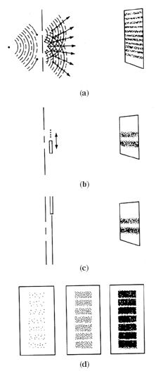

Figure 8-1
If light is a wave (see (a) below), then a series of alternating light and dark fringes should appear on a photographic film after the light is made to pass through a pair of slits. This can be explained by "picturing" a set of circular waves starting from each slit. Where the waves intersect, they are reinforced, producing maximum light intensity and the banding effect on the film. The banding effect appears regardless of the intensity of the light. If light consisted of tiny particles (b), a single pair of bright stripes should appear on the film. If alternate slits are opened and closed, this picture is recorded. If a detection device is added to the arrangement of both slits open (c), then a particle effect is recorded. Close inspection (d) of the photographic film showing a wave effect also shows a gradual piling of individual particle hits.
